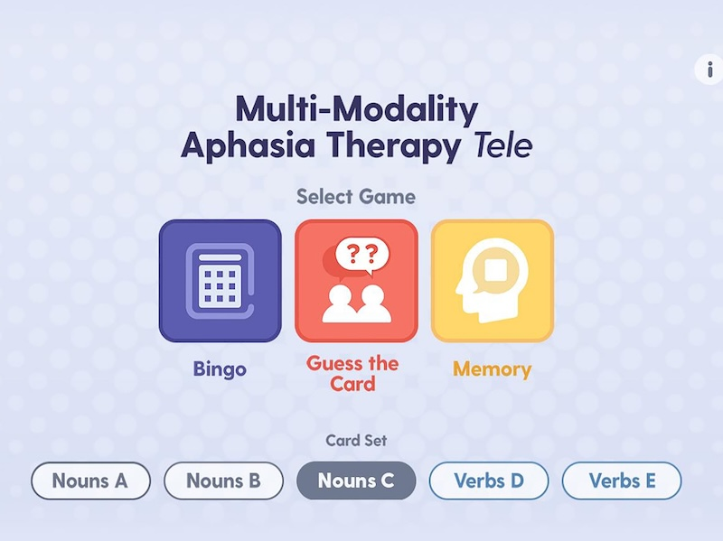

Multi-Modality Aphasia Therapy (M-MAT) is a group-based treatment for aphasia. It supports spoken language by combining speech with gesture, writing, reading and drawing. People with aphasia practice word retrieval within phrases and sentences.
A large trial showed benefits for word finding, functional communication and quality of life.

M-MAT Tele is the telehealth version of the same treatment. It was adapted through co-design so people with aphasia could take part in structured, interactive group therapy from home.

A therapy may not necessarily be as effective online as it is face to face. This pilot trial tested whether our M-MAT Tele adaptation was feasible, acceptable and promising enough to take into a larger study.

Nine people with chronic post-stroke aphasia took part. They were placed into 3 x small groups of three - two mild groups and one moderate group.
| Day 1 | Day 2 | Day 3 | Day 4 | Day 5 | Day 6 | Day 7 |
2 hours |
2 hours |
2 hours |
M-MAT Tele was provided online by a speech pathologist in small groups, with 15 x two-hour sessions across five weeks - a total of 30 hours of treatment.
Results were encouraging, with the clearest positive signals seen in word finding, functional communication and communication-related quality of life.
Participant feedback was positive. People described M-MAT Tele as easy to access, enjoyable and socially motivating, with many valuing the convenience of joining from home and the chance to connect with others with aphasia. Several participants reported greater confidence in everyday communication and longer spoken sentences over time.
Eight of nine participants rating M-MAT Tele positively and seven saying they would definitely recommend it to others.
Therapists valued the multimodal approach and the group format, and felt the software largely worked as intended. Their feedback also pointed to useful refinements for future trials, including larger and clearer images, streamlined administration, clearer expectations for carers, and more challenge for people with milder aphasia.
Minor software and protocol changes were recommended. Some participants with mild aphasia wanted more challenge.